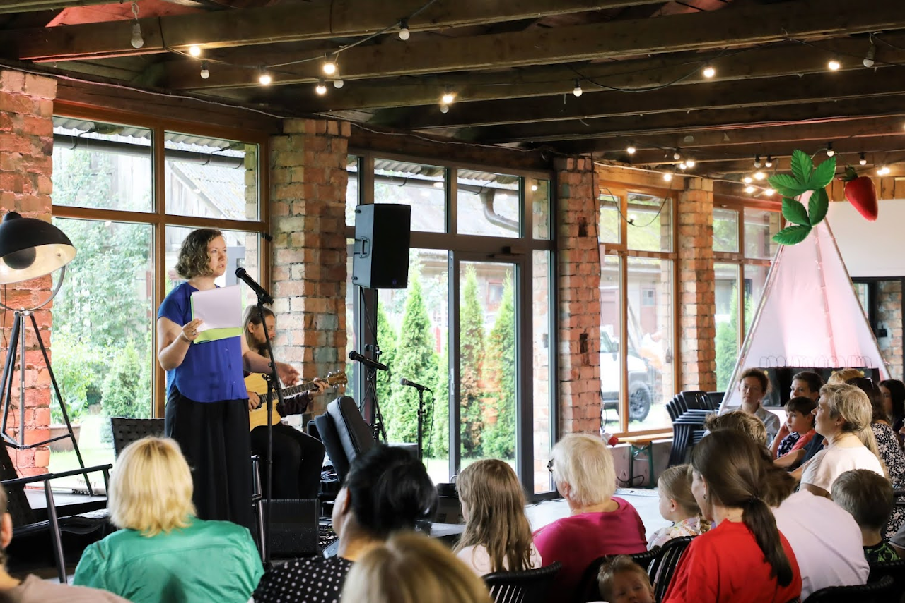

Creative Writing
Research is at the centre of my professional life as a humanities scholar, but in my spare time I enjoy writing for children. Two of my children’s books have been published. In 2025, “Draugi un kaimiņi” received the Latvian Literature Award and the LSM.lv readers’ choice award, as well as a nomination for the International Jānis Baltvilks Prize in Children’s Literature and Book Art.

Draugi un kaimiņi
Children’s literature

Documentary writing


Meetings with readers
Alongside my creative writing, I visit libraries and schools to meet young readers. Our conversations go beyond my books and explore a wide range of questions, mostly connected with life writing. Why do we keep diaries, and what makes them valuable? When can we write our life stories and memories? What did people write in their diaries 100, 50 or 30 years ago? What is a family’s documentary heritage, and why should we preserve it? Conversations with young people bring my creative and research work together.
